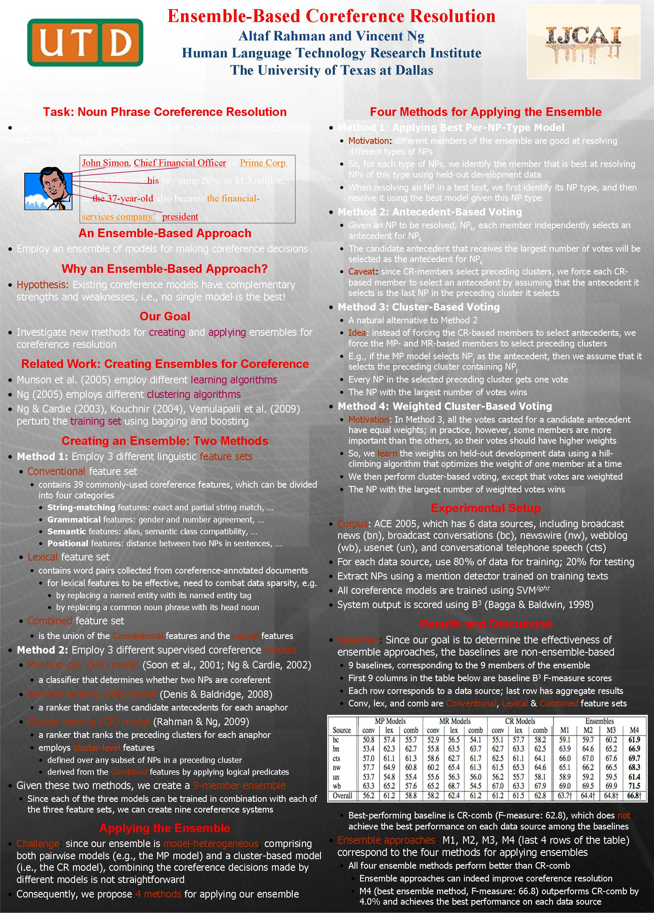

Ensemble-Based Coreference Resolution
Altaf Rahman and Vincent Ng.
Proceedings of the 22nd International Joint Conference on Artificial Intelligence, pp. 1884-1889, 2011.
Click here for the
PostScript or PDF
version.
The talk slides are available here.
Abstract
We investigate new methods for creating and applying ensembles for
coreference resolution.
While existing ensembles for coreference resolution are
typically created using different
learning algorithms, clustering algorithms or training sets,
we harness recent advances in coreference modeling and
propose to create our ensemble from a variety of supervised coreference models.
However,
the presence of pairwise and non-pairwise coreference models in our
ensemble presents a challenge to its application: it is not
immediately clear how to combine the coreference decisions made by these
models.
We investigate different methods for applying a model-heterogeneous ensemble
for coreference resolution.
Empirical results on the ACE data sets
demonstrate the promise of ensemble approaches:
all ensemble-based systems significantly
outperform the best member of the ensemble.
Train-test split
Here are the lists of names of the files from the English portion of the
ACE 2005 Multilingual Training Corpus we used for training and testing.
BibTeX entry
@InProceedings{Rahman+Ng:11b,
author = {Altaf Rahman and Vincent Ng},
title = {Ensemble-Based Coreference Resolution},
booktitle = {Proceedings of the 22nd International Conference on Artificial Intelligence},
pages = {1884--1889},
year = 2011
}
